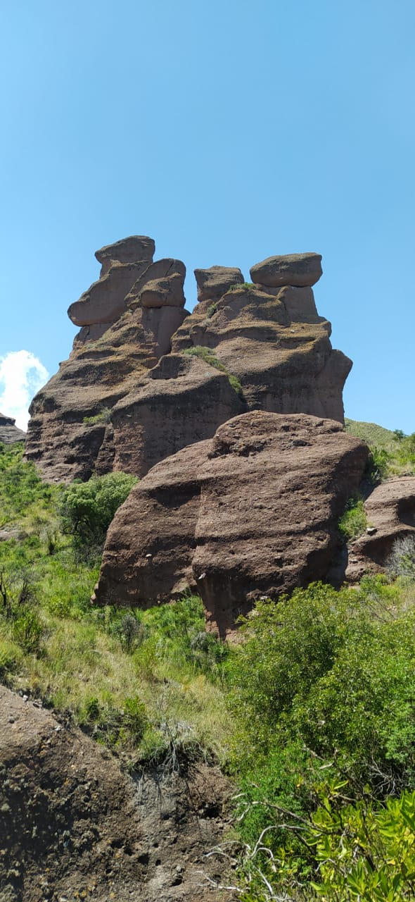
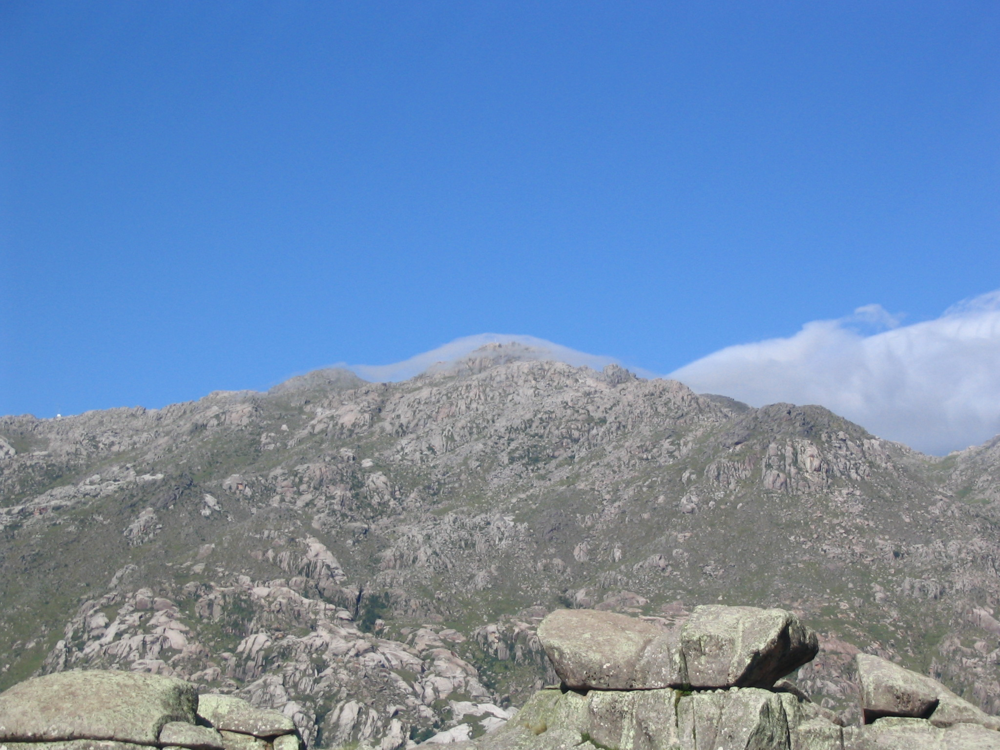
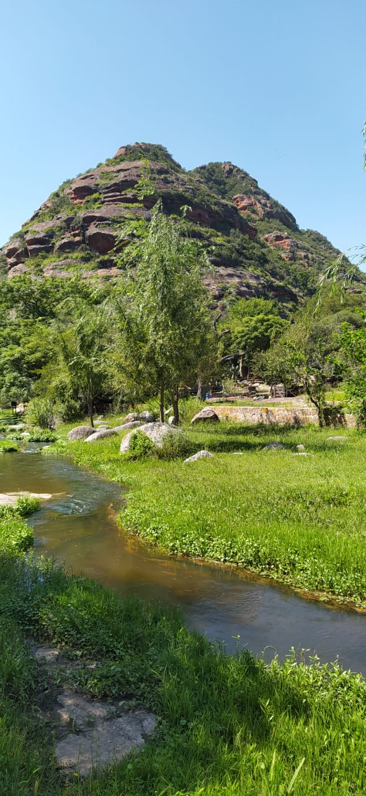

Los Terrones
Parque Autoctono cultural y recreativo los Terrones esta ubicado a 14 km de la localidad de Capilla del Monte.
Ir Sitio Oficial


Cerro Colorado
Es una localidad de la provincia de cordoba, se encuentra a 160 km de la misma.
Ir Sitio Oficial